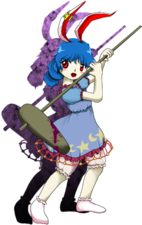

Título: Touhou Kanjuden ~ Legacy of Lunatic Kingdom
Desenvolvedora: Team Shanghai Alice
Criador: ZUN
Data de lançamento: 14 de agosto de 2015
Plataforma: PC (Windows)
Gênero: Shoot 'em up (danmaku / bullet hell)
Descrição:
Touhou 15 é o décimo quinto jogo principal da série Touhou.
A história gira em torno de uma ameaça vinda da Lua,
envolvendo o Reino Lunar e um plano de invasão à Terra.
O incidente coloca Gensokyo em perigo sob uma atmosfera
estranhamente purificada.
A atmosfera da Terra começa a ser purificada de forma anormal, tornando o ambiente hostil para humanos e youkais. O fenômeno está ligado ao Reino Lunar.
Reimu Hakurei, Marisa Kirisame, Sanae Kochiya e Reisen Udongein Inaba partem para investigar o ocorrido e confrontar os responsáveis.
Elas descobrem que Junko, uma entidade movida por ódio puro, está liderando um ataque contra a Capital Lunar como forma de vingança.
Com o apoio de Hecatia Lapislazuli, uma misteriosa deusa associada ao Inferno e à Lua, o conflito se intensifica, levando as protagonistas até a própria Capital Lunar.
O jogo apresenta um dos níveis de dificuldade mais altos da série, com padrões extremamente densos de projéteis.
É introduzido o sistema “Pointdevice Mode”, que permite reiniciar imediatamente após ser atingido, focando em superação de desafios em vez de vidas limitadas.
Reimu Hakurei (sacerdotisa do Santuário Hakurei)
Marisa Kirisame (maga humana)
Sanae Kochiya (sacerdotisa do Santuário Moriya)
Reisen Udongein Inaba (coelha lunar do Eientei)
Cada personagem possui diferentes tipos de disparo e modos que influenciam diretamente a dificuldade e a estratégia durante a campanha.
